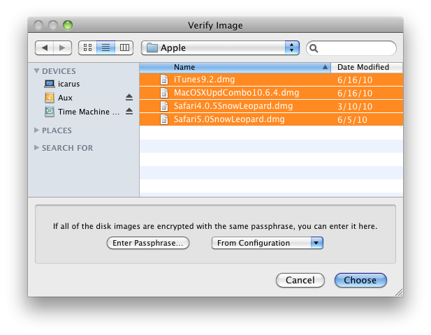

This command lets you verify that a disk image file is in working order (i.e. that it is not damaged) before it becomes a serious problem. You can tell DropDMG to verify a folder, and it will find all the disk images in that folder (and its subfolders) and verify them.
For example, if there is damage to your disk image and a file becomes corrupt, you’ll learn of the problem as soon as you use the Verify Image… command. Without Verify Image…, you might only learn of the problem when you tried to access the damaged file on the disk image (perhaps a long time in the future), and perhaps not even then, because the corruption might not be readily apparent. Because you learn about the damage early, you can restore a correct version of the file from a backup, rather than filling your future backups with damaged copies of the file.
The verification works by reading the entire contents of the disk image and calculating a checksum. This is then compared with the checksum that was stored in the disk image when it was first created. Because modifying the contents of a disk image would invalidate the checksum, only disk images in read-only formats can be verified.
You can hold down the Command or Shift key to verify multiple disk images at once. The Enter Passphrase… button lets you specify the passphrase for accessing encrypted disk images. The From Configuration pop-down menu lets you use a passphrase that’s stored in your keychain as part of a configuration.
A shortcut for Verify Image… is to drag the source disk image onto the DropDMG window or DropDMG’s Dock icon while holding down the Control key.
